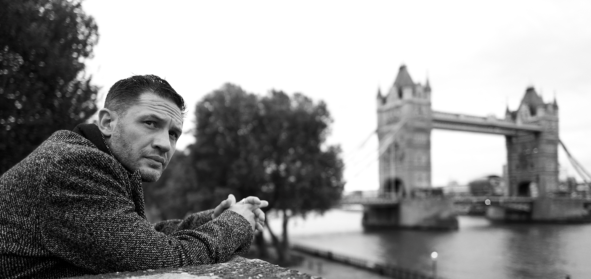

Tom Hardy Biography

About
Tom is an English actor known for some pretty big roles like bane in The Dark Knight Rises. He was born on September 15, 1977, in Hammersmith, London in the UK. He studied acting at Richmond Drama School and at Drama Centre London. One of his first roles was in HBO’s mini-series Band of Brothers where he played an Army Private named John Janovec. His first major film debut was in Black Hawk Down where he played Lance Twombly. Since then, he has been involved in numerous projects alongside big name actors with roles in Inception, The Dark Knight Rises, The Revenant and Venom to just name a few. In his personal life Tom is married to fellow actress Charlotte Riley and together they have two kids. He also has another son from a previous marriage with Sarah Ward that ended in 2004.
Movies

- Black Hawk Down
- Star Trek: Nemesis
- Marie Antoinette
- Bronson
- Warrior
- Tinker Tailor Soldier Spy
- Lawless
- The Dark Knight Rises
- Inception
- Mad Max: Fury Road
- The Revenant
- Dunkirk
- The Matrix Resurrection
- Venom
- Venom: Let there Be Carnage
Television
- Band of Brothers
- Cape Wrath
- Oliver Twist
- Peaky Blinders
- Taboo
Awards
- Best Actor-Bronson
- Best Actor-Legend
- Best Male Performance in a Drama Series-Taboo
- Best Ensemble- Tinker Tailor Soldier Spy
- Best Actor in an Action Movie- Mad Max: Fury Road
- Best Supporting Actor- The Revenant